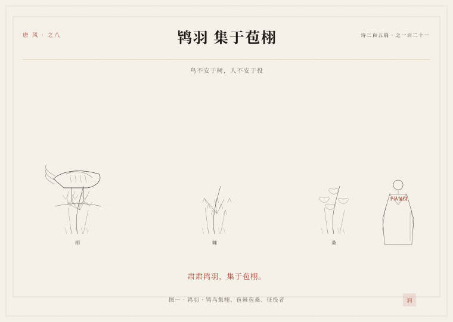
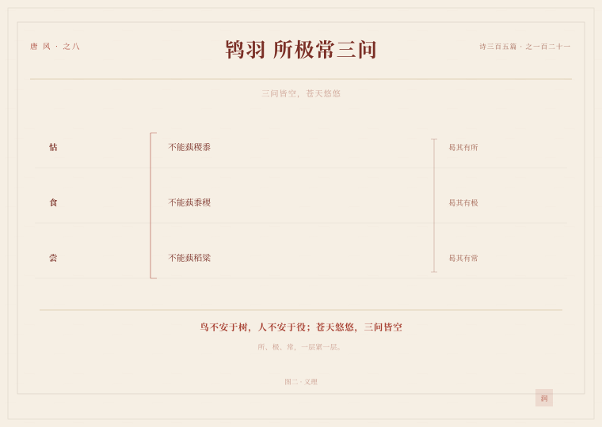

第一百二十一篇 鸨羽
唐风 · 之八 SJ121
朗读 · 普通话
依经文原文朗读，章次不读出；配古琴底乐，不改速、不加拖腔。全库同一音色（豆包 TTS），非播音员录制。
一 解题
诗三判：
- 谁在说：晋国下从征役之君子。王事没有止息，归家也无力耕种，父母无所依怙；仰望苍天，问何时得安其居。
- 说什么事：三章只换羽/翼/行、栩/棘/桑、稷黍/黍稷/稻粱、怙/食/尝、所/极/常。鸟集于树是苦，人从征役也是苦。
- 为何编在此：唐风之八。120 刺在位不恤民，121
写民困于役；一在上薄，一在下困，皆晋室之乱世。
《毛序》：“《鸨羽》，刺时也。昭公之后，大乱五世，君子下从征役，不得养其父母，而作是诗也。”
朱子《诗集传》：“鸨，鸟名，似雁而大，无后趾。集，止也。苞，丛生也。栩，柞栎也。其子为皂斗，壳可以染皂者是也。蓺，树。”
本库的看法：《鸨羽》是一首以鸟之不安写人之不安的诗。
鸨性不树止（不善栖树），今肃肃然集于丛生之柞栎，危苦不安；郑笺以为喻君子当居安平之处，今下从征役，其苦如鸨之树止。全诗五句一转：王事—不能蓺—父母何怙—苍天—曷其有所。人穷反本，困则告天；告天不是求救，是役到无处可诉。
断语：鸟不安于树，人不安于役；苍天悠悠，所、极、常皆不可得。
先辨五事：“鸨”是大鸟（似雁而大，无后趾），不是 SJ078
中骊白杂毛的马；“盬”是止息、攻致（靡盬＝没有止息），不是“蛊惑”；“蓺”是种植，不是“艺术”；“怙”是依靠，不是“姑息”；“行”读
háng，翮也（鸟羽行列），不是行走。
二 经文
第一章
肃肃鸨羽，集于苞栩。
王事靡盬，不能蓺稷黍。
父母何怙？悠悠苍天！曷其有所？
第二章
肃肃鸨翼，集于苞棘。
王事靡盬，不能蓺黍稷。
父母何食？悠悠苍天！曷其有极？
第三章
肃肃鸨行，集于苞桑。
王事靡盬，不能蓺稻粱。
父母何嘗？悠悠苍天！曷其有常？
分章：三章，章七句。
三 韵读
- 一章：羽、栩、盬、黍、怙、所，鱼部；“所”收，安得其所。
- 二章：翼、棘、稷、食、极，职部；“盬”鱼部不入韵；“极”收，何时有已。
- 三章：行、桑、粱、尝、常，阳部；“盬”不入韵；“常”收，何时复常。
- 朱子无叶音改读；“悠悠苍天”为叹词句，不韵。
读法：三章韵脚由鱼而职而阳，所、极、常三问一层紧一层，皆落空处。
四 字义与名物
- 肃肃：鸨羽之声。集：止、栖。苞：稹，丛生。
- 栩：柞栎，其子为皂斗，壳可染皂。棘：酸枣树。桑：桑树。
- 靡盬：无止息；毛传“盬，不攻致也”。蓺：树，种植。
- 怙：恃，依靠。所：安居之所。极：已，止尽。尝：食。常：常业、正常生活。
名物：
- 鸨：大鸟，似雁而大，无后趾（连蹄），性不树止；树止则苦。
- 稷黍、黍稷、稻粱：五谷之常食；三章换序换谷，见耕稼之全废。
五 今译
肃肃鸨羽响，栖在丛生柞栎上。王事没有止息，无力种稷黍。父母靠什么？悠悠苍天！何时才得安居？
肃肃鸨翼响，栖在丛生酸枣上。王事没有止息，无力种黍稷。父母吃什么？悠悠苍天！何时才到尽头？
肃肃鸨羽列，栖在丛生桑树上。王事没有止息，无力种稻粱。父母拿什么吃？悠悠苍天！何时才复平常？
六 章旨
- 一章：写“羽”与“所”。鸨集栩木，人役于外；父母无所怙，问何时得所。
- 二章：写“翼”与“极”。翼集棘木，役无止已；父母无所食，问何时有极。
- 三章：写“行”与“常”。行列集桑，耕稼全废；父母无所尝，问何时复常。
- 总收：所、极、常三问，皆不可得；苍天悠悠，只闻叹声。
七 诗教
- 兴：以鸨之树止兴君子从役；鸟尚不安于木，人何以堪于役。
- 观：观征役之下，耕稼与奉养两废；王事攻致，家事罢倦。
- 群：役者、父母、苍天，三者相望；人子不得养父母，是一身之群裂。
- 怨：怨在“靡盬”与三问；不指斥君上，只告苍天，怨而不失其厚。
八 分寸与边界
- 不可把此篇之鸨读成
SJ078《大叔于田》“乘乘鸨”之马。彼为骊白杂毛之马，此为大鸟；同名异物，卷次与上下文可辨。
- 不可把“不能蓺”读成“不能回家种地”的字面。郑笺明言筋力疲极，虽归亦不能播；一读不得归，苦处就减一半。
- 不可把“苍天”当作祈愿有应。诗中三问皆无答；一读有应，征役之苦便成叙事。
- 不可把“盬”当蛊惑、盬盗。盬为不攻致、无止息；一读常义，王事之勤与废皆落空。
- 不可把此诗读作个人思家。毛序系于“大乱五世，君子下从征役”；一读一己之思，世乱民困便看不见。
九 存疑
- 诗旨：毛序“刺时，君子下从征役，不得养父母”；朱子仅注名物，未申美刺。本库从毛序。
- “盬”：毛传“不攻致”；一说“盬，止也”（靡盬＝无止）。两训相成，今取“无止息”为说。
- “蓺”：郑笺“树也”；一字本作“蓺”或“艺”。从蓺，种植之义。
- “鸨行”：毛传“行，翮也”；一说“行，行列”。从翮（羽本），与羽翼相次。
- 五世之目：郑笺指昭公、孝侯、鄂侯、哀侯、小子侯；《左传》所记曲沃之争年世与此序小有出入。存其说，不强合。
十 跨典
- 《论语·为政》：“生，事之以礼。”——养父母为人子之礼；此诗所伤，在不能事。
- 《孟子·梁惠王上》：“仰足以事父母，俯足以畜妻子。”——有恒产者有恒心；役夺其耕，仰事遂缺。
- 《诗经·小雅·四牡》：“王事靡盬，我心伤悲。”——同用“靡盬”；一小雅慰使臣，一唐风怨征役。
- 《诗经·魏风·陟岵》（110）：“予子行役，夙夜无已。”——同行役之诗；彼代亲言，此自诉天。
- 《左传·桓公二·八年》：曲沃灭翼，晋之乱五世；序中世乱，本此。
十一 双卡与图
双卡八对：
| 鸨（大鸟） |
鸨（骊白杂毛马） |
| 盬（无止息） |
盬（蛊惑） |
| 蓺（种植） |
蓺（艺术） |
| 怙（依靠） |
怙（姑息） |
| 行（翮／羽列，háng） |
行（行走） |
| 苞（丛生） |
苞（花苞） |
| 极（已、止尽） |
极（极点） |
| 常（常业） |
常（常常） |

图一 · 鸨羽 鸨鸟集栩、苞木、征役者

图二 · 鸨羽 所·极·常三问
读图三处：
- 鸨鸟：图一鸨只画背、翼、足，不画全形、不画眼；鸟性不树止，集树之苦以翼重足轻见。
- 苞木：三章栩、棘、桑三丛并列，各标一名；丛而不茂，见荒役。
- 三问在图二：三行“怙—所”“食—极”“尝—常”，右格苍天一线；三问皆空，末格朱线收。